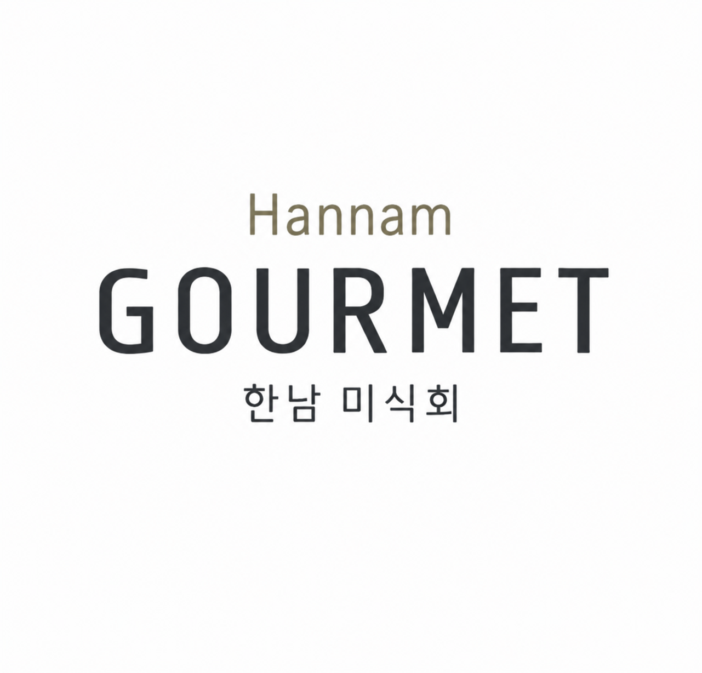

육회
차갑게 시작하는 첫 번째 한입

TOUCH THE SEAL TO OPEN
PRIVATE DINNER
꼴에 맛있는거 먹겠다고 모인 한남들 모임.
01 / INVITATION
두명의 쉐프가 각자 코스를 준비해
한 자리에서 함께 나누는 저녁입니다.
오늘만큼은 식당 대신
우리가 직접 만든 식탁에 초대합니다.
02 / DINNER
04 / CHEFS
두 명의 쉐프가 각자의 방식으로 준비한 요리를
한 자리에서 함께 나누는 특별한 저녁입니다.
육회와 연어 사시미로 시작해 오리 스테이크까지 이어지는 코스를 준비합니다.
현성초등학교 졸업
김포남자중학교 중퇴
고졸검정고시
일베코스프레회원
노무현의 일곱요리사 발탁
현 우리집 주방장
삼겹살과 관자 꼬치, 바지락 술찜을 거쳐 들기름 메밀면으로 마무리하는 코스를 준비합니다.
전주북초등학교 졸업
우아중학교 졸업
전북대학교 사범대학 부설고등학교 졸업
숭실대학교 졸업
우흥시티 올해의 요리사 Top5

05 / DRINKS
차갑게, 천천히.
메인 요리와 함께.
06 / SEE YOU
시간에 맞춰 편하게 와주세요.
배고픈 상태로 오는 것을 권장합니다.